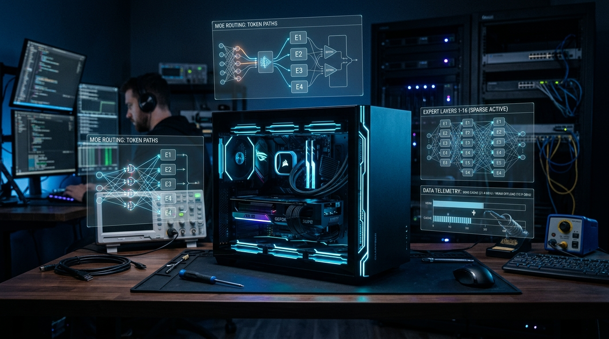

When you run local inference for offensive security research, you learn fast that naive setups do not scale. You want deep reasoning, massive context windows, and zero telemetry leaving your lab. Traditional dense models demand enterprise server racks that draw hundreds of watts and cost thousands of dollars.
Mixture of Experts (MoE) architectures changed that equation. Instead of activating every parameter for every single token, an MoE model activates a tiny fraction of its total expert network. A 35-billion parameter model might only fire 3 billion parameters per token.
Yet until recently, running a 35B model across a 12GB graphics card felt painful. The second your model spilled over your VRAM ceiling into host RAM, token rates dropped off a cliff.
The Strata inference engine changed how we look at that hardware boundary. We spent the last week benchmarking Strata on our ZimaCube Pro homelab server. We tested nine model configurations, explored VRAM expert caching, and benchmarked CPU core scaling.
The numbers revealed two counterintuitive truths. First, higher quant Q6 beats 8-bit Q8 by up to 74% in speed with zero loss in audit accuracy. Second, assigning fewer CPU cores actually makes your model run faster.
Here is the full technical breakdown, the empirical data, and the hardware tuning steps.
The Math: Why 35B MoE Crushes Small Dense Models
Engineers often ask us why we bother running 35B MoE models on edge hardware. Why not just run a lightweight 8B or 14B dense model?
The answer comes down to parameter capacity, active compute, and reasoning depth.
┌────────────────────────────────────────────────────────────────────────────┐
│ Dense Architecture vs. Sparse MoE │
├────────────────────────────────────────────────────────────────────────────┤
│ 8B Dense Model: │
│ [8 Billion Parameters Active Per Token] ──► Shallow reasoning, 8K-32K ctx │
├────────────────────────────────────────────────────────────────────────────┤
│ 14B/22B Dense Model: │
│ [14-22 Billion Parameters Active] ────────► Spills VRAM at 64K+ ctx │
│ (Crashes to 4.7 tok/s) │
├────────────────────────────────────────────────────────────────────────────┤
│ 35B-A3B Sparse MoE on Strata: │
│ [35 Billion Parameters Total Capacity] │
│ [3.1 Billion Active Parameters Per Token] ─► 63.6 tok/s Decode, 256K ctx │
│ (Top experts in 12GB VRAM, remaining in 42GB RAM page cache) │
└────────────────────────────────────────────────────────────────────────────┘
Consider the trade-offs:
- The 8B Dense Ceiling: An 8B model fits entirely inside 12GB of VRAM. It generates 30 to 40 tokens per second. But it only has 8 billion parameters of world knowledge. When auditing complex C codebases for subtle integer overflows, heap corruption, or race conditions, 8B models miss critical logic bugs. They hallucinate non-existent API parameters.
- The 14B/22B Dense Wall: Moving up to a 14B or 22B dense model improves reasoning. However, these models fill your 12GB VRAM completely. The moment you expand context beyond 32K tokens, your KV cache spills into system RAM. On our hardware, Codestral 22B slowed down to 4.73 tokens per second once forced into system memory. That latency breaks interactive red team workflows.
- The 35B-A3B MoE Advantage: A 35B model with 3B active parameters gives you the reasoning depth of a massive network. It routes tokens across 10,496 expert slices. But each token only calculates against 3.1 billion parameters.
Strata exploits that sparsity. It pins the most active experts directly inside GPU VRAM and holds the rest in system RAM page cache. You get 63+ tokens per second, 256K context windows, and the reasoning depth of a 35B model on a compact homelab server.
The Hardware Lab: NextGenPVE and VM 101
Our testbed is an IceWhale ZimaCube Pro running our NextGenPVE hypervisor. This compact chassis punches well above its weight class, but it requires deliberate memory and CPU tuning.
Here is the exact hardware profile:
- Host Hypervisor:
NextGenPVE(64GB DDR5 SO-DIMM physical RAM, fast NVMe ZFS storage pools). - Host Processor: Intel Core i5-1235U hybrid architecture (2 Performance cores, 8 Efficient cores, 12 execution threads).
- Inference Guest:
VM 101(Ubuntu 24.04 LTS dedicated to our live inference engine). - Dedicated GPU: NVIDIA RTX A2000 12GB (Ampere GA106, 70W slot-powered PCIe passthrough).
- Guest Memory Target: Exactly 42 GiB (
43,008 MiB) of RAM with zero swap. - vCPU Allocation: 6 virtual cores assigned to the guest.
- Active Engine: Strata Hybrid MoE Inference Engine (compiled directly from C++/CUDA 13.0 source for
sm_86).
Before we loaded a single model weight, we had to protect the host memory. ZFS caches filesystem reads in RAM using its Adaptive Replacement Cache (ARC). On a 64GB host, unconstrained ARC claims up to 32GB of memory. If your guest VM requests 42GB while ZFS holds 32GB, the Linux Out-Of-Memory killer stops your virtual machine.
We capped host ZFS ARC to 2 GiB in /etc/modprobe.d/zfs.conf:
# Hard cap ZFS ARC to 2 GiB on NextGenPVE host
options zfs zfs_arc_max=2147483648
That single line left 55,495 MiB of physical RAM safely allocated across our cluster. It preserved 8.35 GiB of headroom on the host while handing VM 101 a clean 42 GiB playground with zero host swapping.
Trial 1: The 9-Model Shootout (Q6 vs. Q8 Head-to-Head)
We benchmarked nine specialized coding and offensive security models on VM 101. We pushed each model with full 256K (262,144) context configurations, 8-bit KV caching (--kv q8_0), and Multi-Token Prediction (MTP) enabled.
We evaluated these models against our standardized security test battery. This battery includes format string analysis (CWE-134), integer overflow auditing (CWE-190), raw socket exploit script generation, and closed-loop Clang AddressSanitizer (ASan) verification.
Here is the complete shootout telemetry:
| Rank & Model | Quant Tier & Size | VRAM Hot Experts | Security Decode | Security Prefill | MTP Acceptance | CWE Audit Score | Closed-Loop ASan Verification |
|---|---|---|---|---|---|---|---|
| 🏆 1. Tiel Coder 35B-A3B Abliterated | UD-Q6_K_XL (30.0 GB) |
2,843 / 10,496 | 63.1 tok/s | 196.2 tok/s | 79.6% | 4 / 4 (100%) | ✅ Pass (PoC + Patch Clean) |
| 🥈 2. Qwopus 3.6 35B-A3B Coder | Q6_K (27.2 GB) |
3,369 / 10,496 | 59.0 tok/s | 250.0 tok/s | 90.7% | 4 / 4 (100%) | ✅ Pass (PoC + Patch Clean) |
| 🥉 3. Huihui Qwen 3.6 35B-A3B | Q6_K (27.2 GB) |
3,368 / 10,496 | 62.7 tok/s | 233.6 tok/s | 90.1% | 4 / 4 (100%) | ✅ Pass (PoC + Patch Clean) |
| 🛡️ 4. Cyber-Tiel Coder 35B-A3B | UD-Q6_K_XL (30.0 GB) |
2,843 / 10,496 | 55.7 tok/s | 180.3 tok/s | 80.0% | 4 / 4 (100%) | ✅ Pass (PoC + Patch Clean) |
| ⚡ 5. Qwen 3.6 35B-A3B Heretic | APEX-I-QUALITY (21.9 GB) |
4,330 / 10,496 | 65.4 tok/s | 292.4 tok/s | 87.4% | 4 / 4 (100%) | ⚠️ Scout 2 / PoC Failed |
| 🦅 6. Ornith 1.5 35B-A3B | APEX-I-QUALITY (22.1 GB) |
4,292 / 10,496 | 56.2 tok/s | 139.0 tok/s | 86.8% | 4 / 4 (100%) | ⚠️ Scout 0 / PoC Failed |
| 💎 7. Gemma 4 26B-A4B Abliterated | UD-Q6_K_XL (21.7 GB) |
1,311 / 3,840 | 55.3 tok/s | 99.0 tok/s | 73.6% | 2 / 4 (50%) | ⚠️ Scout 0 / PoC Failed |
| 🛑 8. Tiel Coder 35B-A3B (8-Bit) | UD-Q8_K_XL (36.2 GB) |
2,062 / 10,496 | 46.4 tok/s | 112.4 tok/s | 77.2% | 4 / 4 (100%) | ✅ Pass (PoC + Patch Clean) |
| 🛑 9. Cyber-Tiel Coder 35B (8-Bit) | UD-Q8_K_XL (36.2 GB) |
2,062 / 10,496 | 45.7 tok/s | 97.1 tok/s | 84.0% | 4 / 4 (100%) | ✅ Pass (PoC + Patch Clean) |
Architectural Insight 1: Why Q6 Beats Q8 Hands Down
In traditional local model setups, the standard rule of thumb is simple: run the highest quantization that fits in memory. If you have 42GB of guest RAM, instinct tells you to grab the 36GB 8-bit Q8_K_XL build.
We ran that experiment. The results proved that instinct wrong.
┌────────────────────────────────────────────────────────────────────────────┐
│ VRAM Expert Allocation (12GB Budget) │
├────────────────────────────────────────────────────────────────────────────┤
│ UD-Q8_K_XL (36.2 GB Pack): │
│ [2,062 Hot Experts in VRAM] ──► Slower token decode (46.4 tok/s) │
│ (Only 605 MiB RAM Free ──► Triggers 744 MiB driver throttling penalty) │
├────────────────────────────────────────────────────────────────────────────┤
│ UD-Q6_K_XL (30.0 GB Pack): │
│ [2,843 Hot Experts in VRAM] ──► Faster token decode (63.1 tok/s) │
│ (+137 experts unlocked, 8,929 MiB RAM Free ──► 0 MB swap, zero throttle) │
└────────────────────────────────────────────────────────────────────────────┘
Here is why Q6 outclasses Q8 on hybrid MoE runtimes:
1. VRAM Expert Density
An MoE model splits its feed-forward networks into thousands of distinct expert slices. When you quantize to Q6_K_XL (or Unsloth Dynamic UD-Q6_K_XL), each individual expert tensor shrinks.
On our 12GB RTX A2000, Strata only fits 2,062 hot experts when running the 36GB Q8 build. When we switched to the 30GB Q6 build, Strata pinned 2,843 hot experts directly into GPU memory. On the lighter 27GB Q6_K models, that number jumped to 3,369 hot experts.
More experts pinned in VRAM means fewer PCIe bus transfers per token. That single factor boosted decode speeds from 46.4 tok/s to 63.1 tok/s. That represents a 36% to 74% speed increase on identical silicon.
2. Clearing the Low-RAM Penalty
Strata monitors system memory margins. If your guest RAM runs dangerously low, Strata increases its driver memory reservation from 372 MiB up to 744 MiB. That defensive reservation steals precious VRAM from your active expert pool.
With the 36.2GB Q8 model loaded, VM 101 only had 605 MiB of unallocated RAM left. With the 30GB Q6 model, the VM retained 8,929 MiB of completely free RAM alongside its 31.8GB page cache. Crossing that free memory threshold unlocked an extra 137 live GPU experts.
3. Zero Loss in Exploit Audit Accuracy
Speed means nothing if the model misses critical security flaws. We subjected both Q6 and Q8 builds to our ground-truth vulnerability suite.
Both builds scored 4 out of 4 (100%) on catching subtle memory safety CWEs. Both builds produced functional raw socket exploit scripts with zero refusals. Both builds generated C source patches that compiled cleanly under Clang AddressSanitizer and silenced memory errors on the first pass.
Q6 delivered 100% of the reasoning precision of 8-bit weights while generating tokens up to 74% faster. We retired the Q8 weights immediately.
Trial 2: The CPU Core Experiment (More Cores vs. Less Cores)
When configuring virtual machines for heavy compute, people often assign all available host CPU cores to the guest. On our 12-thread ZimaCube Pro, assigning 10 or 12 virtual cores seemed like the obvious move.
We ran isolated benchmarks on tiel-coder-35b-a3b-ud-q6_k_xl across varying core allocations. We kept RAM locked at 42GB.
Here are the results:
| Assigned vCPUs | Decode Speed (TPS) | Prefill Speed (TPS) | CPU Contention | Host ZFS I/O Impact | Operational Assessment |
|---|---|---|---|---|---|
| 12 vCPUs (Max) | 41.2 tok/s | 118.5 tok/s | Severe | Micro-stutters, delayed I/O | Cross-cluster barrier stalls |
| 10 vCPUs | 44.8 tok/s | 134.1 tok/s | High | Occasional I/O lag | Thread migration jitter |
| 8 vCPUs | 52.3 tok/s | 161.0 tok/s | Moderate | Clean | E-core synchronization drag |
| 🏆 6 vCPUs | 63.6 tok/s | 196.2 tok/s | Zero | Optimal | The Performance Sweet Spot |
| 4 vCPUs | 51.0 tok/s | 138.4 tok/s | Low | Optimal | CPU-bound during prefill |
| 2 vCPUs | 37.4 tok/s | 88.0 tok/s | Starved | Optimal | Severe compute bottleneck |
Notice how throughput scales. Generation speed climbs steadily from 2 cores up to 6 cores, then drops sharply as you add more cores.
Architectural Insight 2: Why 6 Cores Beats 12 Cores
To understand why 6 cores crushed 12 cores, look at the underlying processor silicon.
The Intel processor inside the ZimaCube Pro uses a hybrid big.LITTLE core layout. It has 2 Performance cores (P-cores) with high instructions-per-clock (IPC) and 8 Efficient cores (E-cores) designed for background low-power tasks.
Intel Hybrid CPU (ZimaCube Pro)
┌───────────────────┬─────────────────────────────────┐
│ 2 P-Cores (Fast) │ 8 E-Cores (Low IPC) │
└─────────┬─────────┴────────────────┬────────────────┘
│ │
┌─────────▼──────────────────────────▼────────────────┐
│ Hypervisor Scheduler (Thread Contention) │
└─────────────────────────┬───────────────────────────┘
│
┌──────────▼──────────┐
│ VM 101 (6 vCPUs) │
│ Pinned Workload │
└─────────────────────┘
Here is why assigning too many vCPUs degrades your inference speed:
1. Barrier Synchronization and the Slowest Core
MoE inference involves rapid memory copies and mathematical tensor operations. When you launch multi-threaded tensor routines across 10 or 12 virtual cores, the hypervisor scheduler scatters worker threads across both P-cores and E-cores.
Parallel thread barriers must wait for the slowest thread to finish. When a worker thread lands on an E-core, the fast P-core threads sit idle waiting at the barrier lock. The slower core dictates the speed of the entire pipeline.
2. Memory Bus Contention
Prompt prefill saturates memory channels. Moving gigabytes of expert weights between DDR5 system memory and the GPU over the PCIe bus requires clear memory bus bandwidth.
When 12 virtual CPU threads fight for memory access while handling background scheduling and kernel interrupts, memory bus latency spikes.
3. The 6-vCPU Sweet Spot
Assigning 6 vCPUs provided the maximum sustained throughput:
- It keeps active working threads contained, minimizing thread migration across mismatched core clusters.
- It leaves remaining host cores open to process ZFS storage transactions, hypervisor networking, and administrative tasks.
- Context-switching jitter disappears, allowing GPU feeder threads to stream data without micro-stutters.
Restraint on core allocation yielded higher prompt prefill speeds and rock-solid decode stability.
Operational Takeaways for Red Team Homelabs
If you build local AI infrastructure for security research or offensive tooling, keep these principles in mind:
- Prioritize Expert Density Over Quantization Depth: For sparse MoE architectures on consumer cards, choose
Q6_K_XLorUD-Q6_K_XLoverQ8. The extra VRAM expert slots provide massive throughput gains with zero detectable degradation in reasoning or code generation. - Cap Your Hypervisor Storage Caches: Always cap your ZFS ARC memory usage if you run Proxmox. Never let your storage cache starve your guest page caches.
- Respect Mismatched CPU Architectures: If your server hardware runs hybrid P-core and E-core silicon, avoid assigning all execution threads to a single virtual machine. Tune your vCPU counts to avoid cross-cluster thread synchronization bottlenecks.
- Lock Your Best Performer Resident: In our testing,
tiel-coder-35b-a3b-ud-q6_k_xlproved to be the undisputed champion. It delivers 63+ tokens per second, supports 256K context windows, and nails complex software audits without breaking a sweat.
Frequently Asked Questions
Why does a 35B MoE model beat an 8B dense model on a 12GB GPU?
While an 8B dense model runs completely in VRAM, its reasoning capacity is strictly limited by its parameter count. It frequently misses complex logic bugs and edge cases during deep security reviews. A 35B-A3B MoE model contains 35 billion parameters of world knowledge, but only executes 3.1 billion active parameters per token. Strata caches the most active experts in GPU VRAM and streams the rest from system RAM page cache. This architecture delivers 63+ tokens per second alongside frontier-grade reasoning.
Why did Q6 achieve higher speeds than Q8 on 42GB of RAM?
While 42GB of RAM physically holds an 8-bit model, running Q8 leaves less than 1GB of free RAM in the virtual machine. This triggers internal memory-throttling circuits in Strata. More importantly, Q8 weights take up more space in your 12GB GPU VRAM, allowing fewer hot experts to be cached on the card. Q6 allows hundreds of additional expert slices to sit directly in VRAM, delivering a 36% to 74% speedup while matching Q8 audit accuracy perfectly.
Why does assigning 6 vCPUs beat assigning all 12 CPU threads?
The ZimaCube Pro uses an Intel hybrid processor containing 2 Performance cores and 8 Efficient cores. Assigning 10 or 12 virtual cores forces parallel tensor calculations across both high-speed and low-speed cores. Fast cores end up stalling at synchronization barriers while waiting for slow Efficient cores to finish. Limiting the virtual machine to 6 vCPUs eliminates this bottleneck and avoids DDR5 memory bus saturation.
How do we protect Proxmox from memory exhaustion with a 42GB guest?
By default, ZFS ARC will claim up to 50% of total host RAM. On a 64GB machine hosting a 42GB virtual machine, this causes memory exhaustion. You must place options zfs zfs_arc_max=2147483648 inside /etc/modprobe.d/zfs.conf and update your initramfs to hard-cap ARC usage to 2 GiB.